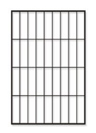
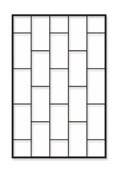
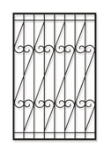
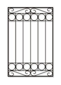
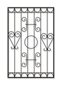

- Главная »
- Услуги »
- Металлоконструкции »
- Металлические решетки на окна »
- Изготовление решеток
Изготовление решеток
Каждый человек издавна использует любые средства для защиты своего дома, хранит свой семейный очаг от посторонних, завистливых взглядов, кражи и взлома. Он устанавливает прочную металлическую дверь, заключает договор с охранной компанией или покупает собаку, которая будет сторожить частный дом. Помогут защитить дом или квартиру от несанкционированного проникновения также решетки окна.
Цены на металлические решетки на окна
|
Наименование |
Внешний вид |
Цены |
|  |
1 850 руб./кв. м |
|
|  |
1 850 руб./кв. м |
|
|  |
1 950 руб./кв. м |
|
|  |
2 200 руб./кв. м |
|
|  |
2 400 руб./кв. м |
Цена оконных ограждений ниже стоимости услуг охранного предприятия
Выбирая разные способы защиты дома или квартиры, необходимо знать, что даже самые прочные и дорогие решетки на оконные проемы с коваными элементамии варианты, которые изготовлены по индивидуальному проекту, стоят намного дешевле, чем оплата услуг профессионалов государственных или частных охранных предприятий. Кроме того, платить за них нужно всего один раз – во время заказа конструкций и их монтажа. Достаточно выделить некоторую сумму один раз и на долгие годы получить надежную защиту. Услуги охранника, консьержа необходимо оплачивать каждый месяц, а собаку нужно сытно кормить ежедневно. Поэтому такие ограждения – не только один из самых эффективных, но также самый дешевый способ защиты дома, коттеджа, магазина, административного или другого здания.
тоимость ограждений для оконных проемов зависит от:
- качества выбранных материалов,
- правильного выбора изготовителя,
- конструкционных особенностей,
- размеров ограждений.
Популярные виды решеток из разных материалов
Чаще всего производители предлагают модели решеток окна из металлических прутьев, однако популярны варианты из других материалов, например, стальных полос. Они могут быть коваными или сварными, отличаться внешним видом и ценой.
Сварные конструкции из арматуры надежно защищают дом от взломщиков. Ранее строители практически не заботились о том, насколько эстетично смотрятся конструкции из прутьев, они просто сваривали их по горизонтали и вертикали, создавали незамысловатые рисунки в форме ромбов. Современные изготовители предлагают широкий выбор сварных конструкций для защиты проемов, некоторые из них выглядят не менее стильно, чем кованые изделия.
Кованые варианты выбирают ценители изящных форм, покупатели, которые в первую очередь обращают внимание на внешний вид изделий. Подобные ограждения не только отлично выглядят, помогают подчеркнуть особенности дизайна, но также отличаются прочностью, надежностью и длительным сроком эксплуатации. Для их производства используются прутья квадратного или круглого сечения, которые отличаются стойкостью к коррозии. Изготовление решеток с помощью ковки занимает больше времени, чем производство сварных изделий, и стоит гораздо дороже.
Защитные конструкции отличаются не только внешним видом, но также способом крепления. Они могут быть:
- стационарными – самый прочный и надежный вариант, его цена несколько ниже остальных;
- раздвижными или распашными – одна или две створки могут открываться;
- съемными – крепятся в оконный проем с помощью специальных болтов.
Стационарные ограждения лучше устанавливать на первом этаже, однако специалисты советуют установить хотя бы одну распашную конструкцию, чтобы в случае критической ситуации, например, пожара, жители квартиры или работники офиса могли быстро покинуть помещение.
Оригинальные решетки украсят любой дом
Арочная, гнутая или кованая решетка станет оригинальным украшением, впишется в дизайн не только классических, но и современных зданий. Талантливые дизайнеры предлагают множество вариантов конструкций из прутьев:
- с листьями,
- с цветами, фигурами животных,
- с вензелями и геометрическими фигурами,
- с логотипом компании.
Важно найти варианты, которые сочетают отличное качество и стильные решения, не просто красиво выглядят, но и отличаются прочностью.
Как выбирать решетки окна правильно?
Ваши окна нужно надежно защитить? Самодельные конструкции для защиты окон выглядят непрезентабельно, а их прочность вызывает большие сомнения. Только изготовление металлических решеток профессионалами может служить гарантией их качества.
Не стоит экспериментировать и пытаться защитить свой дом самостоятельно! Заказывайте изготовление конструкций из арматуры только у производителей, которые могут полностью гарантировать их качество.
Металлические изделия производит компания «Металлообработка 24»
Предлагаем надежно защитить оконные проемы вашего дома, офисного здания или складского помещения от взлома и заказать металлические решетки на странице компании «Металлообработка 24». Наши клиенты могут получить следующие преимущества от сотрудничества:
- вполне демократичные цены;
- широкий выбор вариантов на любой вкус;
- стильные современные решения для коттеджей, частных домов, торговых центров и офисных зданий;
- внимание к каждому заказчику;
- четкое соблюдение сроков, которые прописаны в договоре;
- изготовление современных решеток с учетом пожеланий клиента.
Компания «Металлообработка 24» – это современное оборудование и опытные специалисты, которые умеют работать с металлопрокатом любых видов, в совершенстве владеют новейшими методами обработки проката. Мы производим изделия, которые полностью соответствуют высоким стандартам качества и нормам безопасности.
Металлические решетки на окна, которые мы изготовим, прослужат долгие годы. Они отличаются прочностью, безупречным внешним видом, стойкостью к механическим повреждениям, воздействию агрессивной среды, а их монтаж не займет много времени. Их изготовление мы начинаем с составления чертежей, выбора материалов для создания конструкций. Поскольку компания «Металлообработка 24» не только производит изделия из проката, но также реализует металлопрокат любых видов, мы выберем для создания изделий только лучшую арматуру с квадратным либо круглым сечением. Порезку проката для создания конструкций мы осуществляем с помощью мощного лазерного луча, что позволяет гарантировать ее точность и оперативность.
Изготовление решеток на окна на странице компании «Металлообработка 24» можно заказать очень просто. Наши менеджеры готовы проконсультировать вас по поводу выбора лучших вариантов, помогут рассчитать стоимость заказа и ответят на любые вопросы, которые касаются производства изделий из черного и цветного металлопроката. Позвонить им можно в удобное время.
Заказывайте изготовление высококачественных изделий из проката на лучших условиях!